作者与出版信息
摘要
[1] 本文结合观测，基于区域海洋模拟系统（ROMS）的数值模拟，仔细考察了东海（ECS）南部底层水中黑潮分支的形态与来源。模式结果表明，在东海底层水中，黑潮入侵形态主要由两支构成：离岸黑潮分支流（OKBC）自台湾东北的黑潮分出后，大致沿∼100 m等深线流动；近岸黑潮分支流（NKBC）源自台湾东北的黑潮，自∼250 m逐渐向西北爬升至∼60 m，在约27.5°N、122°E附近转向东北，随后沿∼60 m等深线东北向流动，最终到达30.5°N后转向东。进一步发现，NKBC主要源自台湾以东的黑潮次表层水（120–250 m），而OKBC则主要来自台湾以东的黑潮水（60–120 m）。这一OKBC与NKBC的形态和来源，很好地解释了2009年8月浙江沿岸外海观测到的现象：∼60 m等深线附近的底层水比∼100 m等深线附近更冷、盐度更低、磷酸盐更丰富。最后提出，在东海南部陆架上，黑潮入侵分支呈反气旋式阶梯结构：底层阶梯为NKBC，中层阶梯为OKBC，上层阶梯为黑潮表层分支（KBC）。
[1] Pattern and origins of Kuroshio branches in the bottom water of southern East China Sea (ECS) were carefully examined by numerical simulations based on the Regional Ocean Modeling System (ROMS) together with observations. Model results show that in the bottom water of ECS, the intrusion pattern of Kuroshio is mainly composed of an Offshore Kuroshio Branch Current (OKBC) which, bifurcated from the Kuroshio northeast of Taiwan, flows nearly along the isobath of ∼100 m, and a Nearshore Kuroshio Branch Current (NKBC) which, originated from the Kuroshio northeast of Taiwan, upwells northwestward gradually from ∼250 m to ∼60 m, then turns to northeast around 27.5°N, 122°E, thereafter flows northeastward along the isobath of ∼60 m, and finally reaches 30.5°N where it turns to east. Furthermore, we found that the NKBC mostly originated in the Kuroshio subsurface water (120–250 m) east of Taiwan, whereas the OKBC mainly stemmed from the Kuroshio water (60–120 m) east of Taiwan. This pattern and origins of OKBC and NKBC well addressed the observational phenomena that off the coast of Zhejiang province, China, there were colder, less saline, and more phosphate-rich bottom water near the isobath of ∼60 m rather than near the isobath of ∼100 m in August 2009. Finally, it is proposed that on southern ECS continental shelf, Kuroshio exhibits its intrusion branches by an anticyclonical stair structure: bottom stair NKBC, middle stair OKBC, and top stair Kuroshio surface branch (KBC).
1. 引言
[2] 黑潮是北太平洋一支强西边界流，源自北赤道流向西的部分。当黑潮在台湾东北撞击东海陆架坡时，它能很好地感知地形变化并分出两支（见图1）：主流沿东海陆坡转向东北[Nitani, 1972]；另一支称为黑潮分支流（KBC）[Qiu and Imasato, 1990]。随后，KBC作气旋式转向，形成冷穹[Tang et al., 1999; Wu et al., 2008]，或称气旋涡[Tang et al., 2000]。此后，它绕台湾北岸作反气旋式转向并西南向流动，形成所谓KBC以西的黑潮分支流[Chuang et al., 1993; Hsueh et al., 1993]。KBC以西的这支黑潮分支流与北向的台湾暖流（TWC）[Guan and Mao, 1982; Fang et al., 1991; Zhu et al., 2004]相遇，再绕台湾北岸作气旋式转向。
[2] The Kuroshio, a strong western boundary current of the North Pacific Ocean, originates from the westbound North Equatorial Current. When the Kuroshio impinges on the continental slope of the East China Sea (ECS) northeast of Taiwan, it well recognizes the topography change and bifurcates into two branches (see Figure 1): the main stream, which turns northeastward along the continental slope of ECS [Nitani, 1972], and the other branch, which is called Kuroshio Branch Current (KBC) [Qiu and Imasato, 1990]. Then, the KBC turns cyclonically and forms a cold dome [Tang et al., 1999; Wu et al., 2008] or called cyclonic eddy [Tang et al., 2000]. Thereafter, it turns anticyclonically around the northern coast of Taiwan and flows southwestward to form a so-called Kuroshio Branch Current to the west of KBC [Chuang et al., 1993; Hsueh et al., 1993]. The Kuroshio Branch Current west of KBC encounters the northward Taiwan Warm Current (TWC) [Guan and Mao, 1982; Fang et al., 1991; Zhu et al., 2004] and then turns cyclonically around the northern coast of Taiwan.
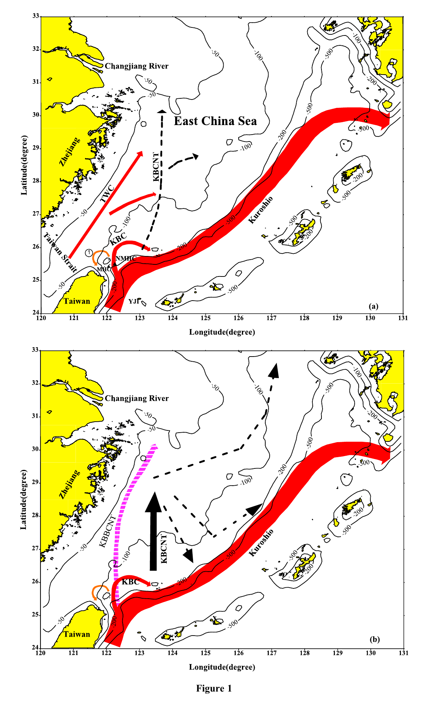
图 1. 黑潮分支示意图。(a) 传统黑潮分支：KBC [Qiu and Imasato, 1990]、TWC [Guan and Mao, 1982] 以及 KBCNT [Ichikawa and Beardsley, 2002; Kondo, 1985]。(b) 新提出的黑潮分支：KBC [Qiu and Imasato, 1990]、TWC [Guan and Mao, 1982] 以及 KBCNT [Yang et al., 2011]。(a)、(b) 中黑色虚线箭头表示可能的黑潮分支。YJF：燕礁；MHC：棉花峡谷；NMHC：北棉花峡谷。
Figure 1. Schematic diagrams of Kuroshio branches. (a) Conventional Kuroshio branches: KBC [Qiu and Imasato, 1990], TWC [Guan and Mao, 1982], and KBCNT [Ichikawa and Beardsley, 2002; Kondo, 1985]. (b) Newly proposed Kuroshio branches: KBC [Qiu and Imasato, 1990], TWC [Guan and Mao, 1982], and KBCNT [Yang et al., 2011]. The black dashed arrows in both (a) and (b) represent possible Kuroshio branches. YJF, Yan-Ji-Jiao; MHC, Mien Hwa Canyon; NMHC, North Mien Hwa Canyon.
[3] 另一方面，有研究指出东海陆架上存在一支北向流，它在台湾东北从黑潮分离出来[Kondo, 1985]。该流被称为台湾以北黑潮分支流（KBCNT）[Ichikawa and Beardsley, 2002]（见图1a）。此外，用1/6°太平洋模式也模拟出类似海流[Guo et al., 2006]，但结果显示该流并不那么贴近中国浙江沿岸。水文观测还表明，黑潮次表层水可到达长江口外31°N附近[Wang and Chern, 1998; Wang et al., 2000]。不过这些观测难以把黑潮次表层水与台湾暖流水（TWCW）区分开，因为二者的温盐范围几乎相同。
[3] On the other hand, it was pointed out that there was a northward current over the ECS continental shelf, which was separated from the Kuroshio northeast of Taiwan [Kondo, 1985]. This current was called Kuroshio Branch Current north of Taiwan (KBCNT) [Ichikawa and Beardsley, 2002] (see Figure 1a). Furthermore, using a 1/6° Pacific model, a similar current had also been simulated [Guo et al., 2006], but it was shown that this current was not so close to the coast of Zhejiang province, China. In addition, hydrographic observations showed that the Kuroshio subsurface water could reach 31°N off the Changjiang river mouth [Wang and Chern, 1998; Wang et al., 2000]. However, these observations could not distinguish the Kuroshio subsurface water from the Taiwan Warm Current Water (TWCW), because they have almost the same range of temperature and salinity.
[4] 基于水文观测和数值试验，Yang et al. [2011]提出存在台湾东北黑潮底部分支流（KBBCNT）。KBBCNT非常贴近浙江沿岸，因而明显有别于KBCNT [Ichikawa and Beardsley, 2002; Kondo, 1985]（见图1b）。KBBCNT可以把黑潮次表层水沿∼60 m等深线输送到长江口外31°N附近。
[4] On the basis of hydrographic observations and numerical experiments, Yang et al. [2011] proposed that there was a Kuroshio Bottom Branch Current to the northeast of Taiwan (KBBCNT). The KBBCNT is so close to the coast of Zhejiang province, China, that it is obviously different from the KBCNT [Ichikawa and Beardsley, 2002; Kondo, 1985] (see Figure 1b). The KBBCNT could carry the Kuroshio subsurface water to 31°N off the Changjiang river mouth along the isobath of ∼60 m.
[5] 然而，KBBCNT的来源仍不清楚，东海底层水中的黑潮入侵形态也远未得到充分认识。本文试图考察东海南部底层水中的黑潮入侵形态以及KBBCNT的来源。第2节给出夏季黑潮入侵的观测现象；第3节用数值模拟考察黑潮入侵形态；第4节讨论黑潮分支的来源；第5节总结结论。
[5] However, the origin of KBBCNT is still unknown, and the Kuroshio intrusion pattern in the bottom water of ECS is still far from being understood. In this paper, we try to examine the Kuroshio intrusion pattern in the bottom water of southern ECS as well as the origin of KBBCNT. In section 2, observational phenomena about Kuroshio intrusion in summer are shown. Then, a numerical simulation is carried out to examine the Kuroshio intrusion pattern in section 3. Section 4 is devoted to discussing the origins of Kuroshio branches. Conclusions are summarized in section 5.
2. 夏季黑潮入侵的观测现象
[6] 2009年8月15日至9月4日开展了一次航次，以考察东海南部陆架环流（见图2）。观测站位见图2（左）。
[6] From 15 August to 4 September 2009, a cruise was carried out to examine the ocean circulation on the southern ECS continental shelf (see Figure 2). The observational stations are shown in Figure 2 (left).
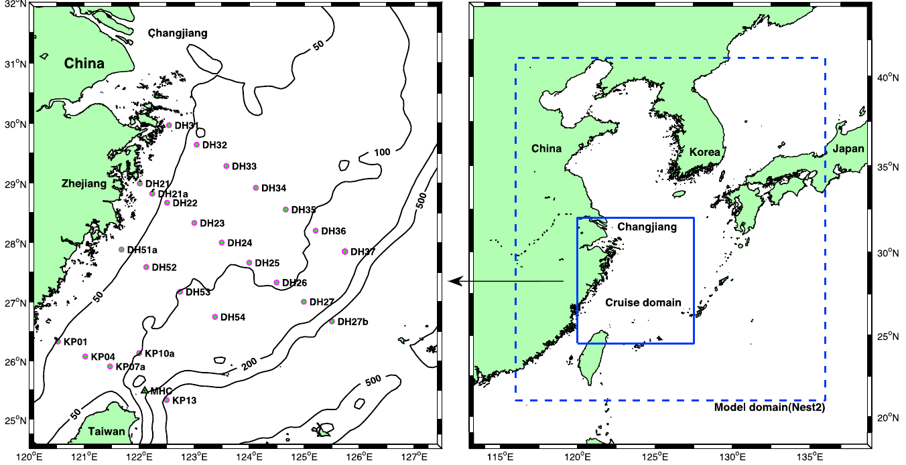
图 2.（左）2009年8月采样站位。MHC表示棉花峡谷。（右）Nest2模式区域，实线蓝框为左图所示航次范围。
Figure 2. (left) Sampling stations in August 2009. MHC represents Mien-Hwa Canyon. (right) Nest2 model domain, where the solid blue box represents the cruise domain shown in the left panel.
[7] 各站用温盐深仪（CTD）测量温度和盐度。同时用玫瑰式采水器采集水样，随即用0.45 μm醋酸纤维滤膜过滤。随后将水样装入预先用0.1 N HCl和蒸馏水冲洗过的50 mL聚乙烯瓶中，于−20°C保存至分析。营养盐按 Grasshoff et al. [1999] 的方法，用SKALAR流动分析仪测定。
[7] At each station, temperature and salinity were measured by a conductivity-temperature-depth (CTD) profiler. In addition, water samples were collected with a rosette sampler, and then they were immediately filtered using 0.45 μm acetate fiber membrane. After that, the water samples were kept in 50 mL polyethylene bottles, which had been washed with 0.1 N HCl and distilled water, and then they were stored at −20°C until analysis. The nutrients were measured by a SKALAR flow analyzer according to the method of Grasshoff et al. [1999].
[8] 断面DH3的观测温度、盐度和磷酸盐分别见图3a、3b和3c。图3a中有两个冷核：core1位于DH33附近，core2位于DH36附近。值得注意的是，core1比core2更冷。同时图3b显示core1的盐度低于core2。图3c进一步显示core1比core2更富磷酸盐。
[8] The observational temperature, salinity, and phosphate of transect DH3 are shown in Figures 3a, 3b, and 3c, respectively. In Figure 3a, there are two cold cores: core1 around DH33 and core2 around DH36. It is interesting to note that core1 is colder than core2. At the same time, Figure 3b shows that core1 is less saline than core2. Furthermore, Figure 3c shows that core1 is more phosphate-rich than core2.
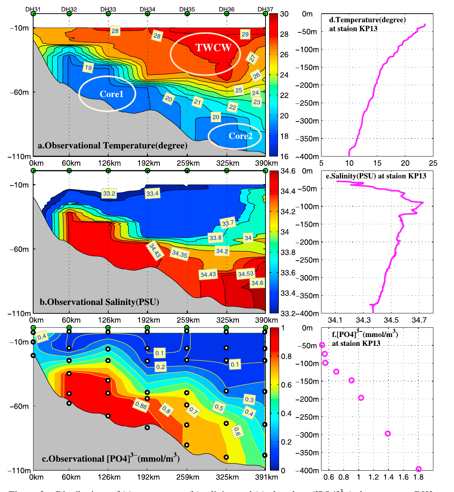
图 3.（a、b、c）断面DH3的观测温度、盐度和[PO4]3−。（d、e、f）站位KP13的温度、盐度和[PO4]3−。TWCW表示台湾暖流水。
Figure 3. (a, b, c) Observational temperature, salinity, and [PO4]3− of transect DH3. (d, e, f) Temperature, salinity, and [PO4]3− of station KP13. TWCW denotes Taiwan Warm Current Water.
[9] 根据图3d、3e和3f，台湾以东的黑潮水可分为三层：黑潮表层水（0–60 m）、黑潮水（60–120 m）和黑潮次表层水（120–250 m）。黑潮表层水的特征是高温（∼29°C）、低盐（∼34.2）和低磷酸盐（∼0.2 mmol m−3）。黑潮水（60–120 m）的特征是相对高温（23°C–29°C）、高盐（∼34.6）和相对低磷酸盐（0.2–0.7 mmol m−3）。黑潮次表层水（120–250 m）的特征是低温（17°C–23°C）、相对高盐（∼34.6）和高磷酸盐（0.7–1.4 mmol m−3）。
[9] In light of Figures 3d, 3e, and 3f, the Kuroshio water east of Taiwan can be classified into three layers: the Kuroshio surface water (0–60 m), the Kuroshio water (60–120 m), and the Kuroshio subsurface water (120–250 m). The Kuroshio surface water is characterized by high temperature (∼29°C), low salinity (∼34.2), and low phosphate (∼0.2 mmol m−3). The Kuroshio water (60–120 m) is characterized by relatively high temperature (23°C–29°C), high salinity (∼34.6), and relatively low phosphate (0.2–0.7 mmol m−3). The Kuroshio subsurface water (120–250 m) is characterized by low temperature (17°C–23°C), relatively high salinity (∼34.6), and high phosphate (0.7–1.4 mmol m−3).
[10] 将图3a、3b、3c与图3d、3e、3f对照可见，core1与黑潮次表层水（120–250 m）非常相似，而core2与黑潮水（60–120 m）非常相似。换言之，core1主要源自台湾以东的黑潮次表层水，core2则主要来自台湾以东的黑潮水。
[10] Comparing Figures 3a, 3b, and 3c with Figures 3d, 3e, and 3f, it can be found that core1 is very similar to the Kuroshio subsurface water (120–250 m), while core2 is very similar to the Kuroshio water (60–120 m). In other words, core1 mostly originated in the Kuroshio subsurface water east of Taiwan, whereas core2 mainly stemmed from the Kuroshio water east of Taiwan.
[11] 图4a给出近底层观测盐度。可见沿∼60 m等深线有一高盐舌，从台湾东北延伸到30.5°N。同时沿∼100 m等深线还有另一高盐舌。需要指出，∼60 m高盐舌的盐度低于∼100 m高盐舌。这与core1盐度低于core2的事实一致（见图3b）。图4b给出90 m层观测盐度。高盐水主要局限于123°E以东，说明图4a中沿∼60 m的高盐舌是底层现象。
[11] Figure 4a shows the observational salinity near the bottom. It can be seen that there is a high-salinity tongue along the isobath of ∼60 m, which extends from northeast of Taiwan to 30.5°N. At the same time, there is another high-salinity tongue along the isobath of ∼100 m. It is worth noting that the salinity of the high-salinity tongue along ∼60 m is lower than that along ∼100 m. This is consistent with the fact that core1 is less saline than core2 (see Figure 3b). Figure 4b shows the observational salinity at 90 m depth. It can be seen that the high-salinity water is mainly confined to the area east of 123°E, which implies that the high-salinity tongue along ∼60 m in Figure 4a is a bottom phenomenon.
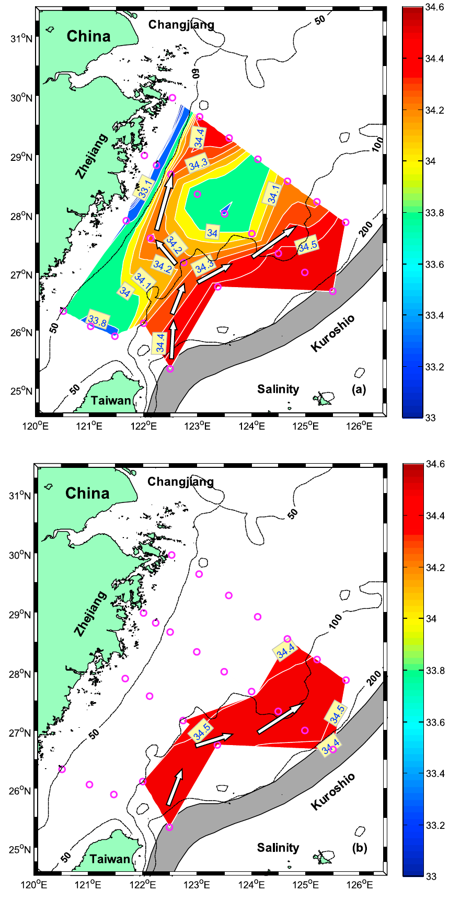
图 4. 观测盐度分布：(a) 近底层；(b) 90 m层。给出50、100和200 m等深线。灰色区域为黑潮典型路径，箭头表示黑潮分支。
Figure 4. Distributions of observational salinity (a) near the bottom and (b) at 90 m depth. The 50, 100, and 200 m isobaths are shown. The gray area represents the typical path of Kuroshio, and arrows represent Kuroshio branches.
此外，船载ADCP观测流速见图5（上）。DH33附近有东北向流，与core1位置一致；DH36附近也有东北向流，与core2位置一致。
In addition, the observational current velocity of ship-mounted ADCP is shown in Figure 5 (top). It can be seen that there is a northeastward current around DH33, which is consistent with the location of core1. There is also a northeastward current around DH36, which is consistent with the location of core2.
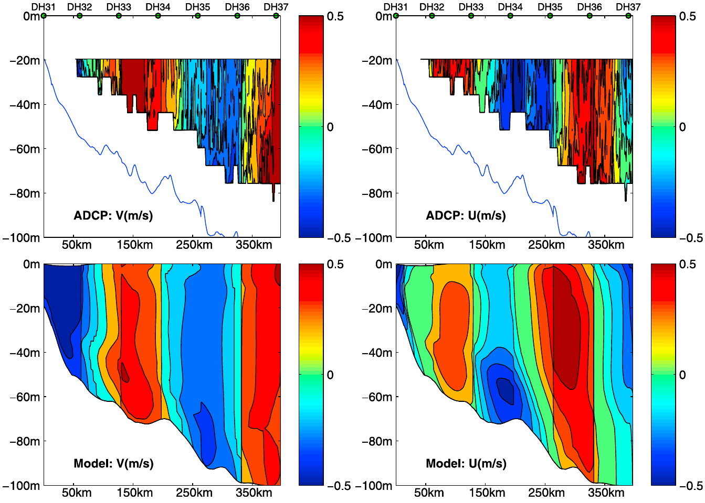
图 5. 船载ADCP观测流速（上）与模式结果（下）。东向U、北向V为正。观测流速于2009年8月21–22日由DH37至DH31连续获得。
Figure 5. Current velocity of the observational ship-mounted ADCP (top) and of the model results (bottom). Eastward U and northward V are positive. The observational velocity was obtained from DH37 to DH31 continuously from 21 to 22 August 2009.
3. 黑潮入侵分支的数值模拟
[12] ROMS 属于三维、自由表面、地形跟随[Song and Haidvogel, 1994]的一类数值模式，适用于海洋与河口研究。模式求解由 Navier–Stokes 方程雷诺平均得到的静力原始方程。尽管 ROMS 提供多种湍流闭合方案，本文水平与垂向涡黏性分别采用 Smagorinsky 参数化和 K 剖面参数化（KPP）[Large et al., 1994]。ROMS 计算算法详见 Shchepetkin and McWilliams [2005]。
[12] The ROMS belongs to a general class of three-dimensional, free-surface, terrain-following [Song and Haidvogel, 1994] numerical models applicable to oceanographic and estuarine studies. The hydrostatic primitive equations resulting from Reynolds averaging of the Navier–Stokes equations are solved in ROMS. Although ROMS offers many methods to implement turbulence closure, in this article, the horizontal and vertical eddy viscosity are calculated using the Smagorinsky parameterization and the K-profile parameterization (KPP) schemes [Large et al., 1994], respectively. Details of the ROMS computational algorithms are reported by Shchepetkin and McWilliams [2005].
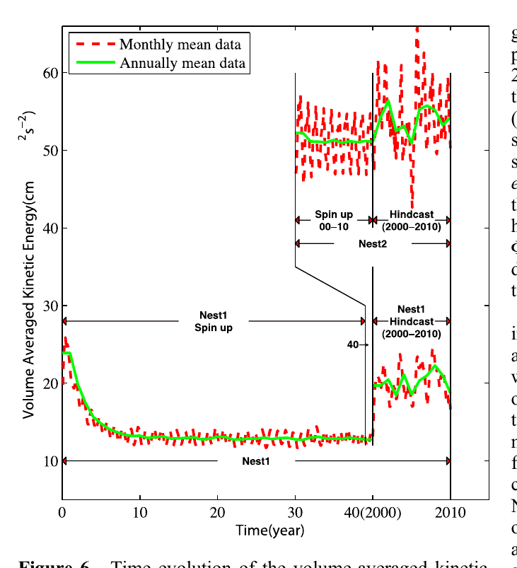
图 6. Nest1 与 Nest2 体积平均动能的时间演变，以及单向嵌套模拟所采用的流程。
Figure 6. Time evolution of the volume-averaged kinetic energy in Nest1 and Nest2 together with the procedure employed to deal with the one-way nesting simulation.
3.1. 模式配置
[13] 受计算条件限制，区域模式通常只模拟有限海域，因而需要开边界条件。为减弱开边界影响，用太平洋模式（Nest1）为区域模式（Nest2）提供开边界。Nest1 覆盖 98°E–112°W、40°S–67°N。Nest2 覆盖 116°E–136°E、21°N–41°N（见图2右）。两模式采用单向嵌套。Nest2 的边界条件由 Nest1 插值得到。Nest2 分辨率约为 ∼8 km（1/12° × 1/12° cos φ）。垂向坐标采用 Shchepetkin and McWilliams [2009] 的拉伸方法生成。
[13] Because of the computational limitation, a regional model is always used to simulate the ocean circulation in a limited domain. Then, the open boundary conditions are required. To reduce the effect of the open boundary conditions, a Pacific Ocean model (Nest1) is used to provide the open boundary conditions for the regional model (Nest2). Nest1 covers the domain of 98°E–112°W, 40°S–67°N. Nest2 covers the domain of 116°E–136°E, 21°N–41°N (see Figure 2, right). The two models are nested in a one-way nesting manner. The boundary conditions of Nest2 are interpolated from Nest1. The resolution of Nest2 is ∼8 km (1/12° × 1/12° cos φ). The stretching method of Shchepetkin and McWilliams [2009] is used to generate the vertical coordinate.
[14] Nest1 先起转 40 年。随后 Nest2 在第 40 模式年的 1 月 1 日由 Nest1 初始化，并在 Nest1 第 40 年强迫下再积分 10 年。其后进行 2000–2010 年回报：Nest2 由 Nest1 的 5 日平均场强迫，并叠加 TPXO7 的 10 个分潮潮流[Egbert and Erofeeva, 2002]。包含长江径流，长江水盐度取为 2。地形、松弛和海表通量请参见 Yang et al. [2011]。
[14] Nest1 is first spun up for 40 years. Then, Nest2 is initialized from Nest1 on 1 January of the 40th model year, and it is run for 10 years forced with the 40th year of Nest1. Thereafter, the hindcast of 2000–2010 is carried out, in which Nest2 is forced by 5 day mean fields from Nest1 together with tidal velocities of 10 constituents from TPXO7 [Egbert and Erofeeva, 2002]. The Changjiang river discharge is included, and the salinity of Changjiang water is set to 2. For the topography, nudging, and surface fluxes, please refer to Yang et al. [2011].
[15] 图6给出 Nest1 与 Nest2 体积平均动能的时间演变，以及单向嵌套流程。Nest1 在 40 年起转后达到准定常。随后嵌套并起转 Nest2，再进行 2000–2010 年回报。
[15] Figure 6 shows the time evolution of the volume-averaged kinetic energy in Nest1 and Nest2 together with the procedure employed to deal with the one-way nesting simulation. After 40 year spin-up, Nest1 has reached a quasi-steady state. Nest2 is then nested and spun up, followed by the 2000–2010 hindcast.
3.2. 模式结果
[16] 图7给出 Nest1 回报试验 2009 年 8 月 20 m 层月平均流，对应夏季航次。黑潮在约 35°N 处恰当地从日本东岸分离[Hasumi et al., 2010]，而不是沿日本东岸北冲到 40°N [Guo et al., 2003]，随后作为黑潮续流继续东流。亲潮沿日本东岸的南侵也被再现。正如 Hasumi et al. [2010] 所指出，北太平洋模拟成功的关键在于正确刻画黑潮分离。因此 Nest1 足以向 Nest2 提供合适的边界和初始条件。
[16] Figure 7 illustrates the monthly mean current at 20 m depth from the Nest1 hindcast run in August 2009, corresponding to our summer cruise. The Kuroshio properly separates from the eastern coast of Japan around 35°N [Hasumi et al., 2010] rather than overshooting northward along the east coast of Japan to 40°N [Guo et al., 2003], and then continues eastward as the Kuroshio Extension. The southward intrusion of the Oyashio along the east coast of Japan is also reproduced. As reported by Hasumi et al. [2010], success in North Pacific modeling hinges on proper representation of Kuroshio separation. Therefore Nest1 is strong enough to supply appropriate boundary and initial conditions to Nest2.
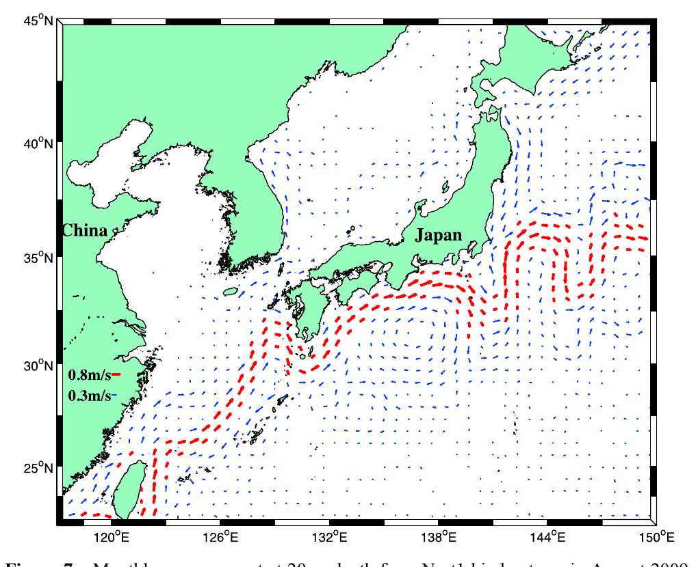
图 7. Nest1 回报试验 2009 年 8 月 20 m 层月平均流。
Figure 7. Monthly mean current at 20 m depth from Nest1 hindcast run in August 2009.
[17] 图8给出 Nest2 回报 2009 年 8 月 20 m 层月平均流。模式环流与东海陆架已知夏季结构（黑潮与台湾暖流）[Guan and Fang, 2006]相符。黑潮在台湾东北转向东北，沿陆架坡折流动至 ∼30.5°N 后转向东，经吐噶喇海峡（TKS）离开东海。Nest2 模拟黑潮强度和宽度约为 1 m s⁻¹ 和 100 km。夏季台湾暖流主要源自台湾海峡并在东海陆架上东北向流动。虽然 Nest1 在 TKS 以西有轻微北冲，Nest2 在 ∼30.5°N 正确转向东。
[17] Figure 8 shows the monthly mean current at 20 m depth from the Nest2 hindcast in August 2009. The modeled circulation agrees well with the known summer structure on the ECS continental shelf, such as the Kuroshio and TWC [Guan and Fang, 2006]. The Kuroshio turns northeastward northeast of Taiwan and flows along the shelf break until ∼30.5°N, where it turns eastward and exits the ECS through Tokara Strait (TKS). The strength and width of the modeled Kuroshio in Nest2 are about 1 m s⁻¹ and 100 km. In summer the TWC mainly originates from the Taiwan Strait and flows northeastward on the ECS shelf. Although Nest1 shows a little overshooting of the Kuroshio west of TKS, Nest2 turns properly east at ∼30.5°N.
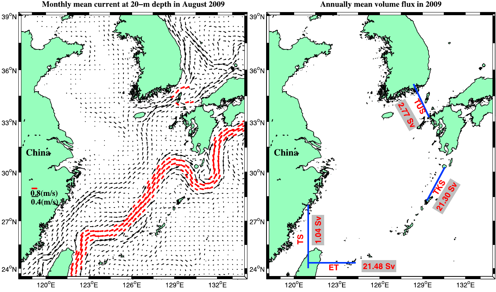
图 8.（左）2009 年 8 月 20 m 层月平均流。（右）模式得到的穿过台湾海峡（TS）、台湾以东（ET）、对马海峡（TUS）和吐噶喇海峡（TKS）的 2009 年年平均体积通量。
Figure 8. (left) Monthly mean current at 20 m depth in August 2009. (right) Modeled annually mean volume flux across Taiwan Strait (TS), east of Taiwan (ET), Tsushima Strait (TUS), and Tokara Strait (TKS).
[18] Nest2 还通过台湾海峡（TS）、对马海峡（TUS）、吐噶喇海峡（TKS）和台湾以东断面（ET）的观测与模式体积通量对比得到定量检验（见图8）。基于 2009 年回报，Nest2 给出 TS 1.04 Sv、TUS 2.77 Sv、ET 21.48 Sv、TKS 21.30 Sv，分别与观测 1.20 Sv [Isobe, 2008]、2.65 Sv [Takikawa et al., 2005]、21.45 Sv [Johns et al., 2001]、20.00 Sv [Teague et al., 2003] 定量相符。
[18] A quantified verification of Nest2 is also provided by comparisons between observed and modeled volume fluxes (see Figure 8) across TS, Tsushima Strait (TUS), TKS, and a section east of Taiwan (ET). From the 2009 hindcast, Nest2 provides annually mean volume fluxes of 1.04 Sv for TS, 2.77 Sv for TUS, 21.48 Sv for ET, and 21.30 Sv for TKS, which agree quantitatively with observations of 1.20 Sv across TS [Isobe, 2008], 2.65 Sv across TUS [Takikawa et al., 2005], 21.45 Sv across ET [Johns et al., 2001], and 20.00 Sv across TKS [Teague et al., 2003].
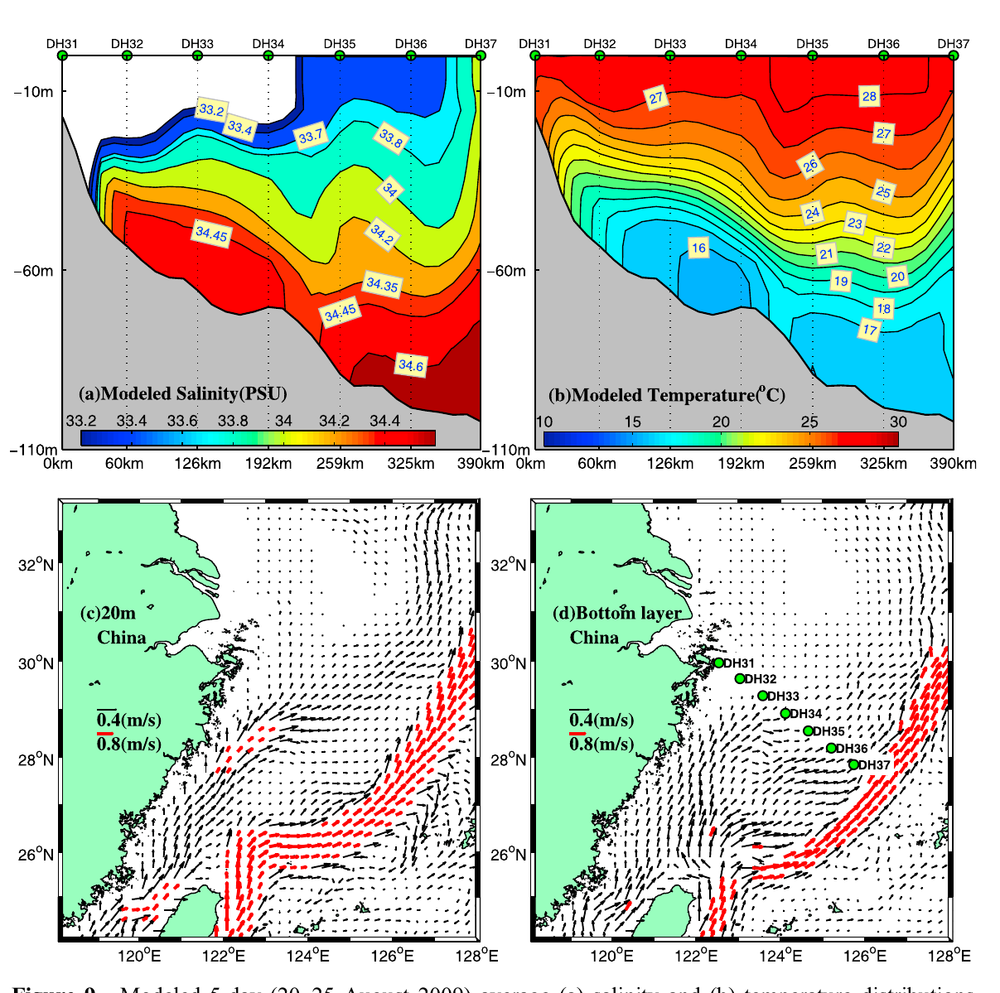
图 9. (a) DH3 断面模式盐度。(b) DH3 断面模式温度。(c) 20 m 层月平均流。(d) 底层月平均流（水深超过 200 m 处改用 200 m 层流速）。(a–d) 均为 2009 年 8 月 20–25 日平均。
Figure 9. (a) Modeled salinity of transect DH3. (b) Modeled temperature of transect DH3. (c) Monthly mean current at 20 m depth. (d) Monthly mean current of the bottom layer (where the water depth is more than 200 m, it is replaced by the current at 200 m depth). (a–d) Averaged from 20 to 25 August 2009.
[19] 20 m 层模式流（图9c）显示，台湾暖流沿浙江沿岸东北向流动，黑潮沿陆架坡折东北向流动。底层模式流（图9d）显示，有一支近岸分支沿∼60 m 等深线东北向流动（NKBC），另有一支离岸分支沿∼100 m 等深线流动（OKBC）。图3a 中的各个核心不仅被忠实再现（见图8b），NKBC 与 OKBC 的流态也与图4中的观测盐度舌相一致。
[19] The modeled current at 20 m depth (Figure 9c) shows that the TWC flows northeastward along the coast of Zhejiang, while the Kuroshio flows northeastward along the shelf break. The modeled bottom current (Figure 9d) shows that there is a nearshore branch flowing northeastward along the isobath of ∼60 m (NKBC) and an offshore branch flowing along the isobath of ∼100 m (OKBC). Not only each core in Figure 3a is faithfully represented (see Figure 8b), but also the current pattern of NKBC and OKBC is consistent with the observational salinity tongues in Figure 4.
[20] 图9c、9d 给出 Nest2 回报 2009 年 8 月 20 m 层与底层月平均流。图9c 中 20 m 流显示突出的台湾暖流，源自台湾海峡并东北向输送暖而低盐的台湾海峡水进入 DH3 断面中部（见图3a、3b）。但在图9d 中，强西北向入侵主导东海陆架，台湾暖流仅见于贴近中国沿岸的窄带，在 28°N 以北几乎消失。底层清楚可见两支流：一支西北向可达 DH33；另一支先西北再转东北，最终到达 DH36。DH33 与 DH36 正是 core1 与 core2 所在。台湾东北紧邻的西向流[Chuang et al., 1993; Hsueh et al., 1992, 1993]也在图9d 中再现。这些特征支持图3a 中 core1 与 core2 由不同海流造成的假定。
[20] Figures 9c and 9d illustrate modeled monthly mean current at 20 m depth and in the bottom layer from the Nest2 hindcast in August 2009. In Figure 9c, the 20 m current shows a prominent TWC that originates in the Taiwan Strait and flows northeastward, transporting warm, low-salinity Taiwan Strait water into the central part of transect DH3 (see Figures 3a and 3b). In Figure 9d, however, strong northwestward intrusion dominates on the ECS continental shelf, and the TWC is seen only in a narrow coastal strip and almost disappears north of 28°N. Two bottom currents are clearly shown: one flows northwestward and can reach station DH33, while the other flows first northwestward, then turns northeast, and finally reaches station DH36. Stations DH33 and DH36 are exactly where core1 and core2 are found. A westward current immediately northeast of Taiwan [Chuang et al., 1993; Hsueh et al., 1992, 1993] is also reproduced in Figure 9d. These features support the assumption that core1 and core2 in Figure 3a are caused by different currents.
4. 讨论
[21] 上述观测与模拟结果提出两个问题。第一，OKBC 与 NKBC 的来源是什么？第二，NKBC 在东海南部陆架上流动时为何能够维持？本节用粒子追踪和被动示踪实验回答第一个问题，并讨论 NKBC 与 OKBC 的生成与维持机制。
[21] The above observational and modeling results raise two questions. First, what are the origins of OKBC and NKBC? Second, why can NKBC be sustained when it flows over the southern ECS continental shelf? In this section, particle tracking and passive tracer experiments are used to address the first question, and the generation and sustaining mechanisms of NKBC and OKBC are discussed.
4.1. 粒子追踪与被动示踪实验
[22] 为考察 OKBC 与 NKBC 的来源，开展了粒子追踪和被动示踪实验。实验始于 2009 年 7 月 1 日。粒子 1、2、3、4 分别在台湾以东 TPRS 断面约 ∼80、∼250、∼260 和 220 m 深处释放（图10）。示踪物取值 100，于 2009 年 7 月 1 日至 10 月 1 日在 TPRS 断面红色区域内连续释放。
[22] In order to examine the origins of OKBC and NKBC, particle tracking and passive tracer experiments are carried out. The experiments began on 1 July 2009. Particles 1, 2, 3, and 4 were released at depths of ∼80, ∼250, ∼260, and 220 m, respectively, in the TPRS section east of Taiwan (Figure 10). A tracer with a value of 100 was continuously released in the red area of the TPRS section from 1 July to 1 October 2009.
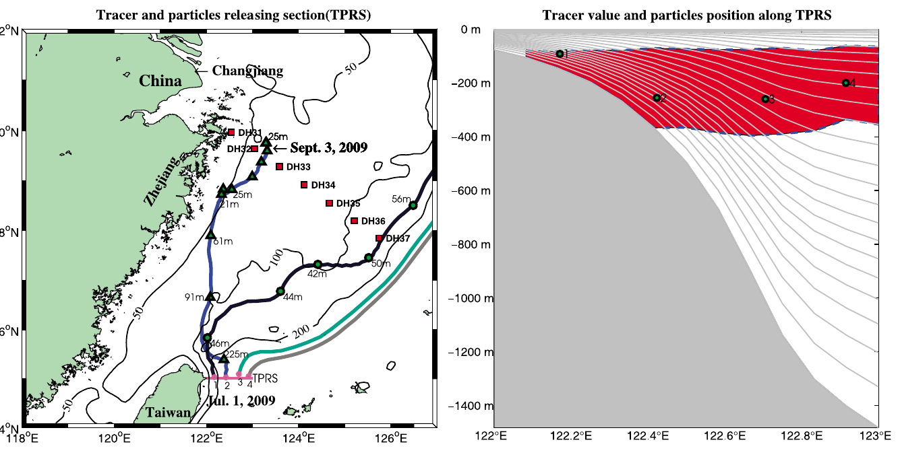
图 10.（左）粒子轨迹。（右）TPRS 断面上的示踪物与粒子位置。粒子于 2009 年 7 月 1 日释放。示踪物取值 100，于 2009 年 7 月 1 日至 10 月 1 日连续释放。红色区域表示取值为 100 的示踪物。蓝线和灰线分别表示粒子轨迹和地形跟随 σ 坐标。绿色圆点对应左图中的粒子。
Figure 10. (left) Particle trajectories. (right) Tracer and particle locations in the TPRS section. The particles were released on 1 July 2009. The tracer with a value of 100 was continuously released from 1 July to 1 October 2009. The red area represents tracer with a value of 100. The blue and gray lines represent particle trajectories and terrain-following sigma coordinates, respectively. The green circles represent the particles shown in the left panel.
[23] 图10（左）显示，在 ∼80 m 释放的粒子 1 沿接近 OKBC 的路径进入东海陆架；在 ∼250 m 释放的粒子 2 向西北爬升，随后沿接近 NKBC 的路径流动。图11a 给出 2009 年 8 月 20–25 日底层 5 日平均示踪物，高值水占据 ∼60 m 附近的近岸底层，与 NKBC 一致。图11b 显示 DH3 断面上的示踪物集中在近岸站底层，与 core1 一致。
[23] Figure 10 (left) shows that particle 1, released at ∼80 m, flows onto the ECS shelf along a path close to the OKBC. Particle 2, released at ∼250 m, upwells northwestward and then flows along a path close to the NKBC. Figure 11a shows the modeled 5 day average tracer of the bottom layer from 20 to 25 August 2009. The high-tracer water occupies the nearshore bottom layer along ∼60 m, consistent with NKBC. Figure 11b shows that the tracer on transect DH3 is concentrated in the bottom layer of the nearshore stations, consistent with core1.
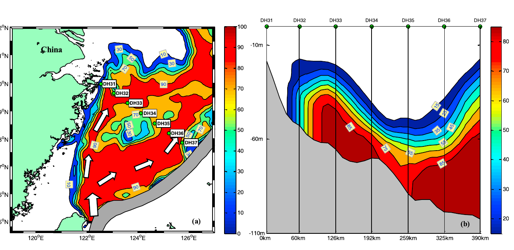
图 11. (a) 底层 5 日平均示踪物（2009 年 8 月 20–25 日）。给出 50、100 和 200 m 等深线。灰色区域为黑潮典型路径，箭头表示黑潮分支。(b) DH3 断面 5 日平均示踪物。
Figure 11. (a) Modeled 5 day average tracer of the bottom layer (from 20 to 25 August 2009). The 50, 100, and 200 m isobaths are shown. The gray area represents the typical path of Kuroshio, and arrows represent Kuroshio branches. (b) Modeled 5 day average tracer of transect DH3.
[24] 这些实验表明，NKBC 主要源自台湾以东黑潮次表层水（120–250 m），而 OKBC 主要来自台湾以东黑潮水（60–120 m）。这与 KP13 站磷酸盐随深度的剖面（图3f）一致，因为 NKBC 起源更深，可以把更多磷酸盐带上陆架。
[24] These experiments indicate that NKBC mostly originated in the Kuroshio subsurface water (120–250 m) east of Taiwan, whereas OKBC mainly stemmed from the Kuroshio water (60–120 m) east of Taiwan. This is consistent with the phosphate-versus-depth profile at station KP13 (Figure 3f), because the deeper origin of NKBC can carry more phosphate onto the shelf.
[25] 至此，DH3 断面上的全部观测现象都可以在如下假定下得到很好解释：夏季东海南部底层水中，黑潮主要以 OKBC 与 NKBC 入侵；OKBC 的起源深度深于 NKBC；NKBC 与 OKBC 分别沿粒子 1 与粒子 2 的轨迹侵入东海陆架。
[25] So far, all the observed phenomena in transect DH3 can be well explained on the basis of our assumption that in the bottom water of southern ECS, the Kuroshio mainly exhibits its intrusion by OKBC and NKBC in summer, the origin depth of OKBC is deeper than that of NKBC, and the NKBC and OKBC intrude onto the ECS continental shelf following the trajectories of particle 1 and particle 2, respectively.
4.2. NKBC 与 OKBC 的生成
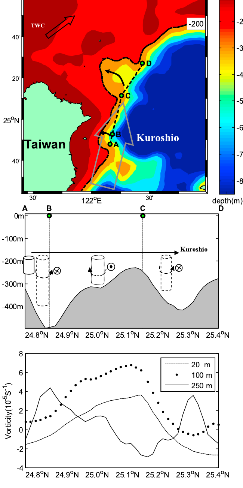
图 12.（上）台湾以东地形，给出 200 m 等深线，水深超过 1000 m 处简化为 1000 m。（中）沿 A-B-C-D 线的地形及台湾东北黑潮分支的生成机制。（下）虚线、点线和实线分别给出沿 A-B-C-D 线 20 m、100 m 和 250 m 层的涡度。
Figure 12. (top) Topography east of Taiwan where isobaths of 200 m is shown and depth deeper than 1000 m is set to 1000 m for simplification. (middle) The topography along the line A-B-C-D and the generation mechanism of Kuroshio branches northeast of Taiwan. (bottom) Dashed, dotted and solid lines show the vorticity along the A-B-C-D line at 20 m, 100 m and 250 m, respectively.
[26] 在宜兰海脊以南（见图12），黑潮主要沿台湾岸线流动[Hu et al., 2008; Tang et al., 2000]，但越过宜兰海脊后离开台湾岸线（见图12上），并因那里近东西向的陆架坡折在 ∼25.7°N 转向东（见图12上）。夏季强温跃层发展后，温跃层以上的上层海水运动独立于黑潮与地形的相互作用[Chern and Wang, 1994]。当黑潮主流越过宜兰海脊时，温跃层以下的黑潮水因宜兰海脊北侧陡坡——水深由脊上仅 ∼300 m 骤增至 ∼500 m（见图12中）——出现正的涡管拉伸[Pedlosky, 1979]。于是在 A、B 两点之间自然产生气旋式涡度（见图12）。因此 B 点附近水体有向西入侵的趋势，但随即在陆架坡折处偏转，在黑潮西侧形成气旋式海流[Chuang et al., 1993; Hsueh et al., 1992, 1993; Liu et al., 2000; Tang and Yang, 1993; Tang et al., 1999]。随后，当黑潮次表层水接近 C 点时，向西入侵会按 B、C 之间的负涡管拉伸[Pedlosky, 1979]作反气旋式转向并西北向流动。同时值得注意的是，C、D 之间存在峡谷（见图12）。因此黑潮次表层水沿 C、D 之间下坡流动时将获得气旋式涡度。于是 C、D 之间的斜坡进一步强化黑潮的向西入侵：下坡产生正涡度，上坡产生负涡度（见图12中）。上述推断随即被 2009 年 8 月沿 A-B-C-D 线的模式月平均涡度所证实（见图12下）。沿 A-B-C-D 线，250 m 层模式涡度分布与地形变化反相：地形为槽时，涡度为峰。与此相对，20 m 和 100 m 层的模式涡度几乎与地形起伏同相。温跃层以下深层水的入侵动力学明显不同于温跃层以上的表层水。深层涡度分布与涡管拉伸分析密切一致。因此，在 C 点附近，黑潮次表层水很有可能经 C、D 之间的峡谷发生强的向陆架入侵（见图12）。B、C 之间可能是 NKBC 的源地。此外，环境位涡变化引起的地形罗斯贝波[Pedlosky, 1979; Isobe, 2004]也许对 NKBC 入侵路径起重要作用。
[26] To the south of I-Lan Ridge (see Figure 12), the Kuroshio mainly flows along the coast of Taiwan [Hu et al., 2008; Tang et al., 2000], but it departs from the Taiwan coast when it passes over the I-Lan Ridge (see Figure 12, top), and turns to east at ∼25.7°N because of zonal-running shelf break there (see Figure 12, top). As a strong thermocline is developed in summer, the movement of upper ocean water above the thermocline is independent of the interaction between Kuroshio and topography [Chern and Wang, 1994]. When the mainstream of Kuroshio passes over the I-Lan Ridge, in the Kuroshio water below the thermocline, there is a positive vortex-tube stretching [Pedlosky, 1979] as a result of the steep slope on the northern side of the I-Lan Ridge, where the depth sharply changes from only ∼300 m at I-Lan Ridge to ∼500 m (see Figure 12, middle). Then, cyclonical vorticity will be naturally produced between point A and point B (see Figure 12). Therefore, the water near point B will have a tendency to intrude westward, but it is in turn deflected at the shelf break, forming a cyclonic current to the west of Kuroshio [Chuang et al., 1993; Hsueh et al., 1992, 1993; Liu et al., 2000; Tang and Yang, 1993; Tang et al., 1999]. Next, as the Kuroshio subsurface water approaches point C, the westward intrusion will turn anticyclonicly and flow northwestward according to the negative vortex-tube stretching [Pedlosky, 1979] between point B and point C. At the same time, it is interesting to note that there is a canyon between point C and point D (see Figure 12). Thus, the Kuroshio subsurface water will subject to a cyclonic vorticity, when it flows down the slope between point C and point D. Therefore, the westward intrusion of Kuroshio is further reinforced by the slope between point C and point D, which yields a positive vorticity by the downward slope and a negative vorticity by the upward slope (see Figure 12, middle). The above inference is immediately confirmed by the modeled monthly mean vorticity in August 2009 along the A-B-C-D line (see Figure 12, bottom). Along the line A-B-C-D, the modeled vorticity distribution at 250 m depth is out of phase with the variation of the topography. In other words, when there is a trough in the topography, there is a peak in the vorticity distribution. In contrast, the modeled vorticity distributions at 20 and 100 m depths are almost in phase with the elevation of the topography. The intrusion dynamics of deep water (below the thermocline) is obviously different from that of surface water (above the thermocline). The vorticity distribution in the deep water agrees closely with the analysis of the vortex-tube stretching. Therefore, it is very reasonable that around point C, there is a strong on-shelf intrusion of Kuroshio subsurface water through the canyon between point C and point D (see Figure 12). The domain between point B and point C may be the place where the NKBC originates. In addition, the topography Rossby wave caused by the variation of ambient potential vorticity [Pedlosky, 1979; Isobe, 2004] maybe plays an important role on the intrusion path of NKBC.
[27] 然而，当黑潮主流越过宜兰海脊时，120–60 m 之间的黑潮水会因其惯性持续北侵。此外，当黑潮水（60–120 m）绕过台湾海岸后，立即失去台湾岸线的阻挡。其中一部分会因向西的压力作气旋式转向，该压力因台湾岸线阻挡消失而不再被平衡。向西压力来自黑潮东侧海表高度高于西侧（图13a）。OKBC 即由这部分黑潮水（60–120 m）的气旋式转向生成。随后为守恒位涡，OKBC 作反气旋式转向并沿 ∼100 m 等深线流动。与此相对，∼60 m 以上的黑潮水受台湾暖流阻挡，并受 β 效应和台湾岛约束[Qiu and Imasato, 1990]，在台湾东北立即转向东，形成 KBC（见图1）。
[27] However, when the mainstream of Kuroshio passes over the I-Lan Ridge, the Kuroshio water between 120 and 60 m will continuously intrude northward as a result of its inertia. In addition, when the Kuroshio water (60–120 m) has passed by the coast of Taiwan, it immediately loses the blocking of the coast of Taiwan. Part of it will turn cyclonically because of the westward pressure, which is unbalanced because of the absence of the blocking of the coast of Taiwan. The westward pressure is caused by the higher SSH at the eastern side of Kuroshio than that at the western side (Figure 13a). The OKBC is generated from the cyclonic turning of this part of Kuroshio water (60–120 m). Then, to conserve its potential vorticity, the OKBC turns anticyclonically and flows following the isobath of ∼100 m. In contrast, the Kuroshio water above ∼60 m, blocked by the TWC and constrained by β-effect and the Taiwan island [Qiu and Imasato, 1990], turns to east immediately northeast of Taiwan, forming the KBC (see Figure 1).
4.3. NKBC 的维持
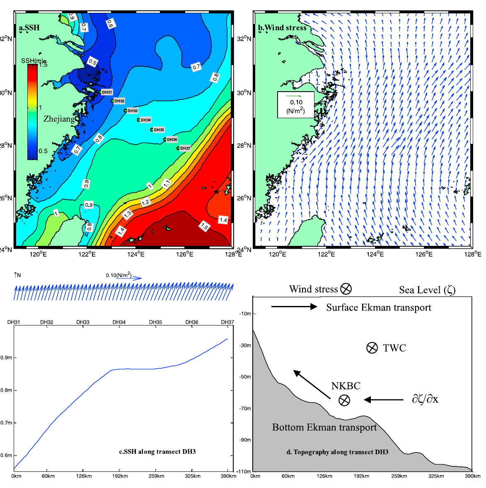
图 13. (a) 2009 年 8 月 AVISO 月平均海表高度（SSH）及 DH3 站位；(b) 2009 年 8 月 CERSAT 月平均风应力；(c) DH3 断面上的风应力与 SSH；(d) 解释 NKBC 何以维持的示意图。
Figure 13. (a) Monthly mean sea surface height (SSH) in August 2009 from AVISO along with the station locations of DH3; (b) monthly mean wind stress in August 2009 from CERSAT; (c) wind stress and SSH along transect DH3; and (d) a diagram explaining why the NKBC can be sustained.
[28] 图13a 给出 2009 年 8 月 AVISO 月平均海表高度（http://www.aviso.oceanobs.com/en/data/）。DH31 站与台湾以东海域之间存在明显 SSH 差。根据夏季西南季风（见图13b 的风应力，来自 CERSAT，http://www.ifremer.fr/cersat/en/data/data.htm），东海上层将出现向海的 Ekman 输送，海表 Ekman 输送进而使 DH3 断面东侧海平面升高、西侧降低（见图13c）。为守恒质量，浙江外海底层水将按与 Ekman 通量散度成比例的速率上升进入海表 Ekman 层。因此，NKBC 入侵可借助压力梯度和海表 Ekman 输送，打破位涡约束。
[28] Figure 13a shows the monthly mean SSH in August 2009 from Archiving, Validation, and Interpretation of Satellite Oceanographic (AVISO) data (http://www.aviso.oceanobs.com/en/data/). It is clear that there is an obvious SSH difference between station DH31 and the area east of Taiwan. According to the southwest monsoon in summer (see the wind stress in Figure 13b, which is from the Centre ERS d’Archivage et de Traitement (CERSAT), http://www.ifremer.fr/cersat/en/data/data.htm), there will be a seaward Ekman transport in the upper ocean water of ECS, and the surface Ekman transport in turn causes the sea level to increase at the eastern side of transect DH3 and decrease at the western side of transect DH3 (see Figure 13c). To conserve mass, off the coast of Zhejiang the bottom water will upwell into the surface Ekman layer at a rate proportional to the divergence of the Ekman flux. Therefore, the intrusion of NKBC will benefit from the pressure gradient and the surface Ekman transport to break the constraint of potential vorticity.
[29] 然而，当 NKBC 流经 DH3 断面时，将出现向岸的底层 Ekman 输送。DH3 断面 core1 中的高密度水（见图3a）理应有沿西–东向斜坡（见图13d）向深水下滑的趋势。但 NKBC 流态仍能维持，因为下滑趋势被向岸压力梯度以及海表与底层 Ekman 输送所平衡。
[29] However, when NKBC flows through transect DH3, there will be a shoreward bottom Ekman transport. It is reasonable that the high-density water in core1 of transect DH3 (see Figure 3a) has a tendency to flow down the west–east running slope (see Figure 13d) to deep water. However, the current pattern of NKBC is sustained because the down-slope tendency is balanced by the shoreward pressure gradient together with the surface and bottom Ekman transport.
5. 结论
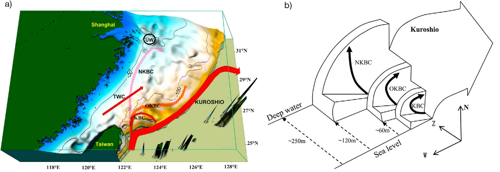
图 14. (a) 夏季黑潮分支形态；水深超过 500 m 处简化为 500 m，UW 表示上升流。细实线为 50 m、100 m 和 200 m 等深线。(b) 黑潮分支的垂向结构，N、W、Z 分别表示北、西和深度方向。
Figure 14. (a) The summer Kuroshio branch pattern where depth more than 500 m is equal to 500 m for simplification, and UW denotes upwelling. Solid thin lines represent the isobaths of 50 m, 100 m, and 200 m. (b) The vertical structure of the Kuroshio branches where N, W, and Z denote north, west, and depth directions, respectively.
[30] 基于现场观测和数值模拟，我们提出：夏季东海南部陆架上的黑潮入侵分支，大体可由四支代表：KBC [Qiu and Imasato, 1990]、OKBC、NKBC，以及 KBC 以西的西向黑潮分支[Chuang et al., 1993; Hsueh et al., 1993]（见图14a）。OKBC 几乎沿 ∼100 m 等深线流动；NKBC 则自台湾东北逐渐向西北爬升至浙江沿岸，最终在长江口外 30.5°N 转向东（见图14a）。需要指出，OKBC 与 NKBC 都明显不同于以往研究中的 KBC [Qiu and Imasato, 1990] 和 KBCNT [Ichikawa and Beardsley, 2002; Kondo, 1985]。
[30] On the basis of field observations and numerical simulation, we propose that, in summer, the pattern of Kuroshio intrusion branches on the southern ECS continental shelf can be mostly represented by four branches: KBC [Qiu and Imasato, 1990], OKBC, NKBC, and the westward Kuroshio branch [Chuang et al., 1993; Hsueh et al., 1993] to the west of KBC (see Figure 14a). The OKBC flows nearly along the isobath of ∼100 m, while the NKBC upwells northwestward gradually from northeast of Taiwan to the coast of Zhejiang province, China, and finally turns to the east off Changjiang river mouth at 30.5°N (see Figure 14a). It is worth noting that either the OKBC or the NKBC is clearly different compared with previous studies such as KBC [Qiu and Imasato, 1990] and KBCNT [Ichikawa and Beardsley, 2002; Kondo, 1985].
[31] OKBC 主要源自 ∼60 至 ∼120 m 的黑潮水，由地形、β 效应和台湾暖流阻挡共同生成。NKBC 则主要源自 ∼120 至 ∼250 m 的黑潮次表层水，主要由黑潮与地形的相互作用造成。
[31] The OKBC stems mostly from the Kuroshio water between ∼60 and ∼120 m, which is generated by the combined effects of topography, β-effect, and the blocking of TWC. Moreover, the NKBC originates mainly in the Kuroshio subsurface water between ∼120 and ∼250 m, which is mostly caused by the interaction between the Kuroshio and the topography.
[32] 黑潮入侵分支的垂向结构见图14b：在东海南部陆架上，黑潮以其入侵分支构成反气旋式阶梯——底层阶梯为 NKBC，中层阶梯为 OKBC，上层阶梯为黑潮表层分支（KBC）。此外，观测到 core1 比 core2 更冷、盐度更低、磷酸盐更丰富，也可以由这一 OKBC 与 NKBC 形态很好地解释。
[32] The vertical structure of the Kuroshio intrusion branches is shown in Figure 14b, where the Kuroshio exhibits its intrusion branches on southern ECS continental shelf by an anticyclonical stair structure: bottom stair NKBC, middle stair OKBC, and top stair Kuroshio surface branch (KBC). Furthermore, the observed colder, less saline, and more phosphate-rich water in core1 rather than in core2 can be explained very well by this pattern of OKBC and NKBC.
[33] 此外，夏季跨陆架的 NKBC 与 OKBC 显然是西太平洋深层水中的物质（如磷酸盐）能够持续穿越黑潮进入东海的主要通道。这些物质进而会对东海生物系统起重要作用。
[33] In addition, in summer, the cross-shelf NKBC and OKBC are obviously the main pathways through which the materials (such as phosphate) in the deep water of the west Pacific Ocean can be transported continuously into the ECS across the Kuroshio. In turn, the material will play an important role in the biological system of ECS.
致谢
[34] 本研究得到国家自然科学基金 40806009、973 计划（2009CB421205）、国家自然科学基金 40976008、中国科学院创新项目（KZCX2-EW-209）、中国科学院创新群体项目（KZCX2-YW-Q07-01）以及国家重点基础研究发展计划（2012CB956000）资助。计算得到中国科学院海洋研究所高性能计算中心支持。感谢厦门大学戴民汉提供磷酸盐数据。
[34] This paper was supported by National Natural Science Foundation of China through grant 40806009, 973 Project (2009CB421205), National Natural Science Foundation of China through grant 40976008, Innovation Project of Chinese Academy of Sciences (KZCX2-EW-209), Innovation Group Project of Chinese Academy of Sciences (KZCX2-YW-Q07-01), and National Basic Research Program of China (project 2012CB956000). This paper was supported by High Performance Computing Center, Institute of Oceanology, Chinese Academy of Sciences. We acknowledge Minhan Dai from Xiamen University for his phosphate data.
参考文献条目不译，文内引文保留。作者邮箱：baitao@nmfc.gov.cn；hychen@qdio.ac.cn；zhlliu@qdio.ac.cn；qijifeng80@163.com；yangdezhou@qdio.ac.cn；bsyin@qdio.ac.cn。
References are omitted from this bilingual reading copy; in-text citations are retained. Author emails: baitao@nmfc.gov.cn; hychen@qdio.ac.cn; zhlliu@qdio.ac.cn; qijifeng80@163.com; yangdezhou@qdio.ac.cn; bsyin@qdio.ac.cn.